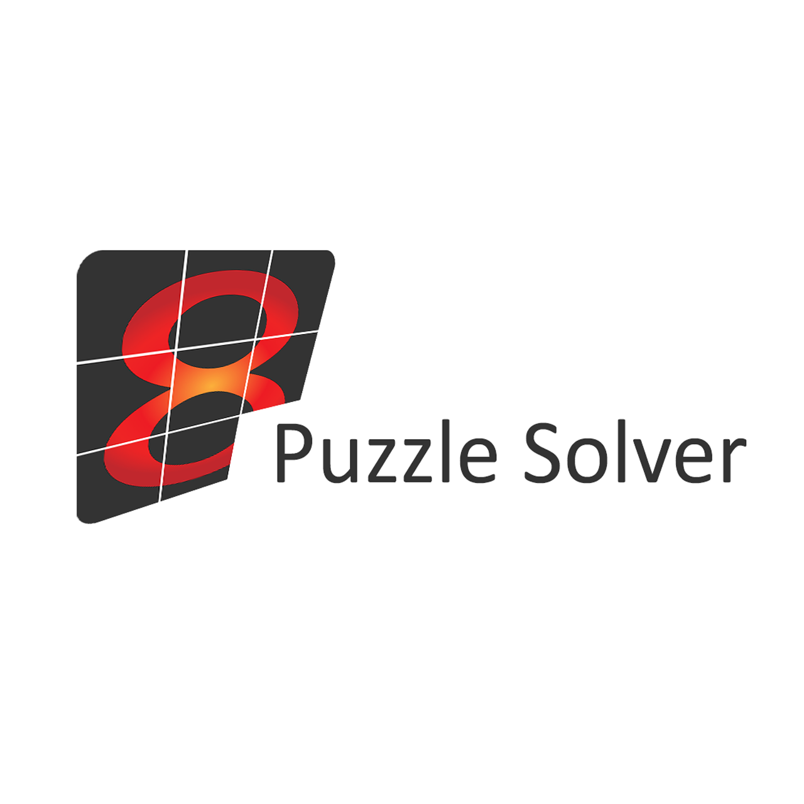
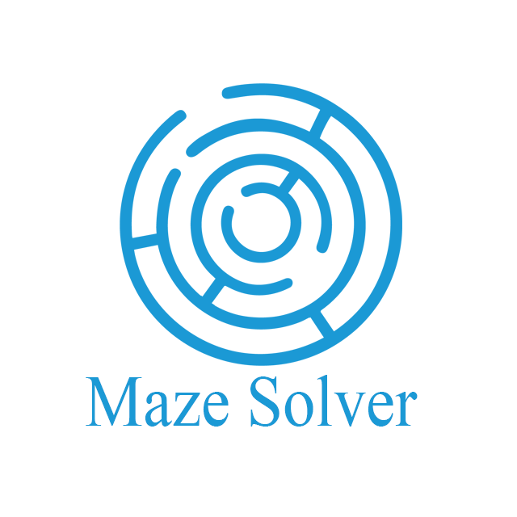

I have a B.Sc. in computer engineering from the University of Kashan, which is one of the oldest and most prestigious universities in Iran (Round University Ranking). I developed concrete knowledge and a strong passion for research in medical image processing, computer vision, feature selection, and the issues surrounding machine learning methods. |
|
|
|
|
|
Python
C / C++
Matlab
Latex
Verilog HDL
Machine Learning
Computer Vision & Image processing
Feature Selection
QT (C++ / PyQT)
Anaconda / Scikit-Learn / OpenCV
Git
University of Kashan, IranMajor in Computer Engineering, B.Sc.September 2017 - September 2021 GPA: 3.54 (Ranked within top 10%) |
Relevant Course Work:Artificial Intelligence Data Mining Discrete Mathematics Data Structures Algorithms Design Computer Networks Signals and Systems Principles of Computational Intelligence Digital Systems Design (ASIC and FPGA) Software Engineering Principles of Internet of Things Basic / Advanced Programming |
|
Expert Systems With Applications journalNovel Optimized Crow Search Algorithm for Feature SelectionRevised ManuscriptHighlights
|
March 2020 - Present |
|
University of KashanAn overview of techniques and improvements in brain tumor detections using image processing and machine vision algorithmsB.Sc. ThesisDescriptionIn recent years, machine learning algorithms have entered the medical world and have played an influential role in diagnosing and treating diseases. One of these applications that have attracted the attention of many researchers is the use of machine learning algorithms and image processing in the diagnosis of various diseases using medical images. Some examples of these specific applications include breast cancer diagnosis, Lung cancer, and brain tumor diagnosis. This research project intends to study the newly proposed algorithms by reviewing the research done in the last years of 2019 and later and evaluating their performance and progress compared to previous articles. Also, to become more familiar with these methods, we will implement one of the new methods presented in the research to examine the results obtained from it in more detail. |
January 2021 - Present Project Document |
|
Uok Dept. Electrical & Computer EngineeringTeaching Assistant
|
February 2018 - June 2021 Kashan, Isfahan, Iran |
||
Courses | |||
|
|
Duke University (Coursera)Image and Video Processing: From Mars to Hollywood with a Stop at the HospitalSee credential Course Descriptions
|
February 2021 - May 2021 |
|
University at Buffalo (Coursera)Computer Vision BasicsSee credential Course Descriptions
|
March 2021 - April 2021 |
|
Duke University (Coursera)Introduction to Machine LearningSee credential Course Descriptions
|
February 2021 - April 2021 |
|
|
 |
8Puzzle SolverThis application solves Puzzle8 problem with AI algorithms (UCS, BFS, DFS) The 8-puzzle is a smaller version of the slightly better known 15-puzzle. The puzzle consists of an area divided into a grid, 3 by 3. On each grid square is a tile, expect for one square which remains empty. Thus, there are eight tiles in the 8-puzzle. A tile that is next to the empty grid square can be moved into the empty space, leaving its previous position empty in turn. Tiles are numbered, 1 thru 8, so that each tile can be uniquely identified. The aim of the puzzle is to achieve a given configuration of tiles from a given (different) configuration by sliding the individual tiles around the grid as described above.
|
November 2019 - December 2019 Kashan, Isfahan, Iran |
|
 |
Maze SolverThis application solves Maze problem with different Data Structures (Queue, Stack) The Maze Problem is a classical experiment from psychology where scientists carefully observe a rat going through a maze. This experiment is performed repeatedly until the rat goes through the maze without going down a single dead end path. This demonstrates the rat’s learning curve. The computer program that does the same thing is not any smarter than the rat on its first try through, but the computer can remember the mistakes it made. The second time it runs through the maze it should go all the way through without going down dead ends. With a computer’s memory, and the right algorithm going through a maze is simple.
|
December 2019 - January 2019 Kashan, Isfahan, Iran |
Feature Selection MethodsVarious mehods for feature selection problems (Statistical method, using classifier, Correlation Matrix) Feature selection (FS) is an important step in machine learning and has a significant impact on data mining performance. In recent years, datasets became very massive in number of attributes and instances. By feature, we mean each column in the table and dimension is the number of dataset columns and instance is the number of records. Feature selection algorithms try to remove redundant, irrelevant and noisy data to reduce the size of the dataset and increase classification accuracy.
|
October 2020 - November 2020 |
|
Sudoku SolverThis application solves Sudoku problem with backtrack algorithm Sudoku is a logic-based, combinatorial number placement puzzle. In classic sudoku, the objective is to fill a 9×9 grid with digits so that each column, each row, and each of the nine 3×3 subgrids that compose the grid (also called "boxes", "blocks", or "regions") contains all of the digits from 1 to 9. The puzzle setter provides a partially completed grid, which for a well-posed puzzle has a single solution.
|
October 2020 - November 2020 Kashan, Isfahan, Iran |
|
Shop ManagementThis application uses Postgresql and QT (C++) to manage a shop in 3 different mode (User, Empleyee, Admin)
|
February 2020 - May 2020 |
|
Smart Home (Internet of Things)In this project, "Node-red" was used for the central server. This project has a web version. A telegram bot has been implemented for this smart home, too. IoT home automation is the ability to control domestic appliances by electronically controlled, internet-connected systems. It may include setting complex heating and lighting systems in advance and setting alarms and home security controls, all connected by a central hub and remote-controlled by a mobile app.
|
June 2020 - August 2020 |
|